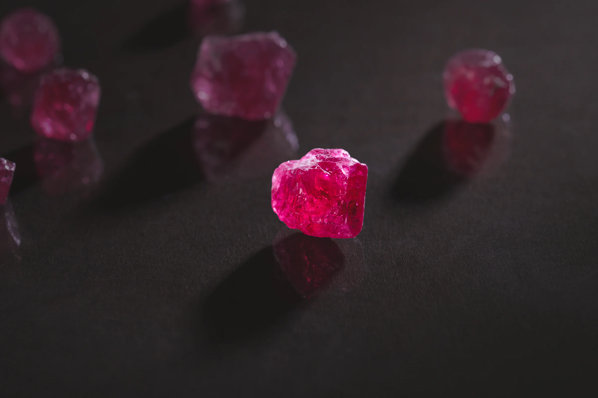
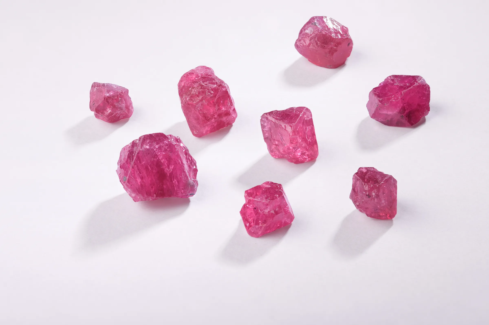
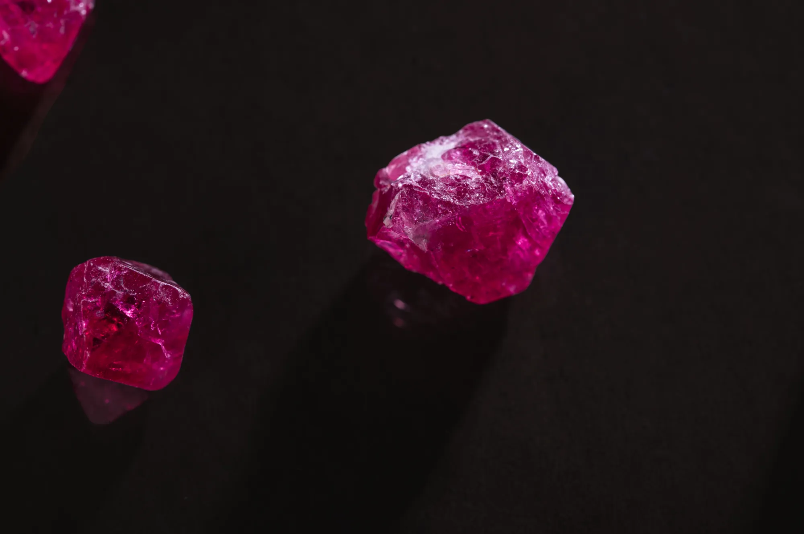
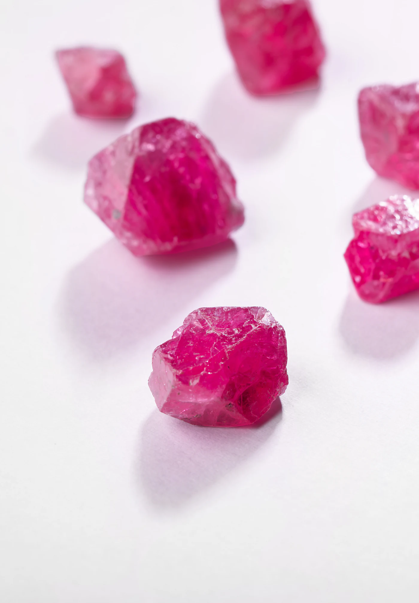
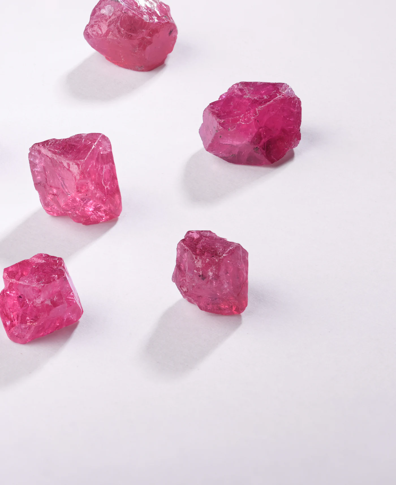
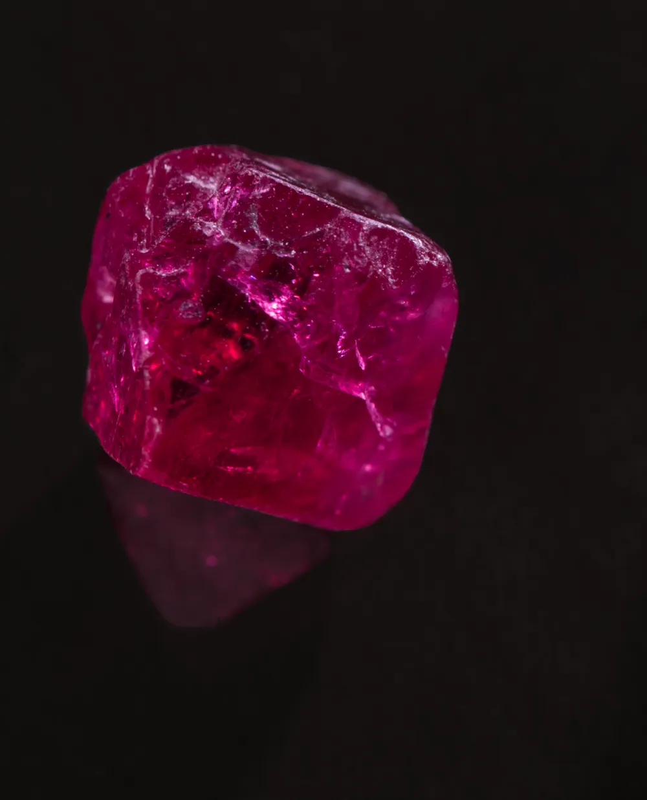
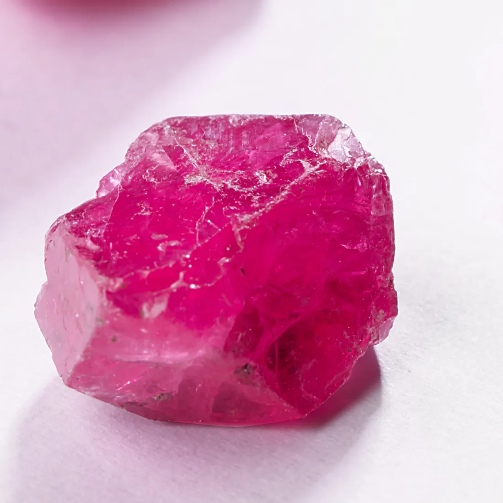

Spinel (MgAl2O4)
A mineral of magnesium, aluminium and oxygen.

From the depths of the East Africa Belt, Spinels emerge, dazzling the world with their beauty and durability.
Royalty and nobility were captivated by the exquisite precious stones, often mistaken for rubies due to their magnificent hue.
A mineral of magnesium, aluminium and oxygen.
Their neon-like glow, a result of the presence of chromium and iron, sets them apart from other Spinels…
…and its characteristic octahedron shape is reminiscent of two pyramids fused.


Pink Spinels are very scarce and have a breathtaking appearance.
Vibrant pastel pinks with a touch of fuchsia, which is due to their single refractivity and exceptional transparency.
Spinels come in a variety of colors such as red, pink, blue, and black.
Spinels require no artificial enhancements or treatments, allowing their natural beauty to shine through.
Measuring an 8 on the Mohs scale, it is an ideal choice for jewelry pieces that can withstand wear and tear.

352
Carats, British Crown Jewels
The Q8 ruby in the British Crown Jewels is a spinel that weighs a staggering 352 carats and was given as a gift by the King of Spain during the 14th century.


Spinels have been revered for their perceived healing properties and their beauty that continues to mesmerize people to this day.
Spinels have a crystal structure that resembles a thorn on a rose, and because of this, they were thought to protect from evil spirits and fire.
As one of the birthstones for August, Spinels symbolize strength and protection. It is believed that this stone can assist individuals in recognizing their purpose in life and provide them with the necessary vitality to live a fulfilling life.
Legends suggest that spinel can reduce stress and anxiety and inspire innovative thinking, allowing individuals to overcome obstacles and demonstrate resilience.
